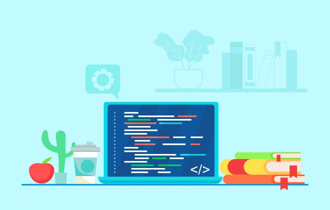

First slide label
Some representative placeholder content for the first slide.
Second slide label
Some representative placeholder content for the second slide.
Third slide label
Some representative placeholder content for the third slide.